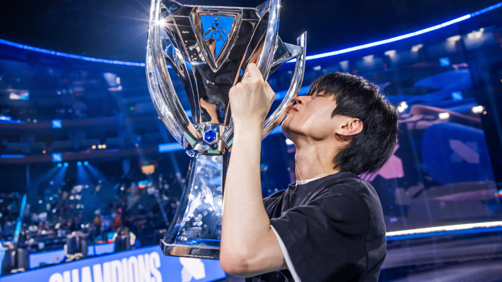
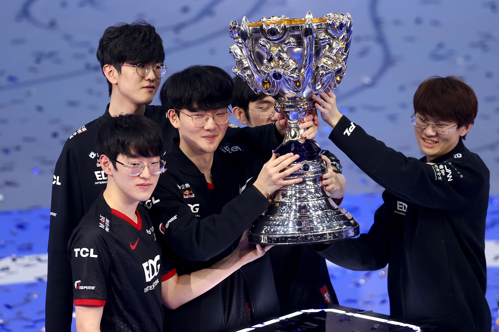
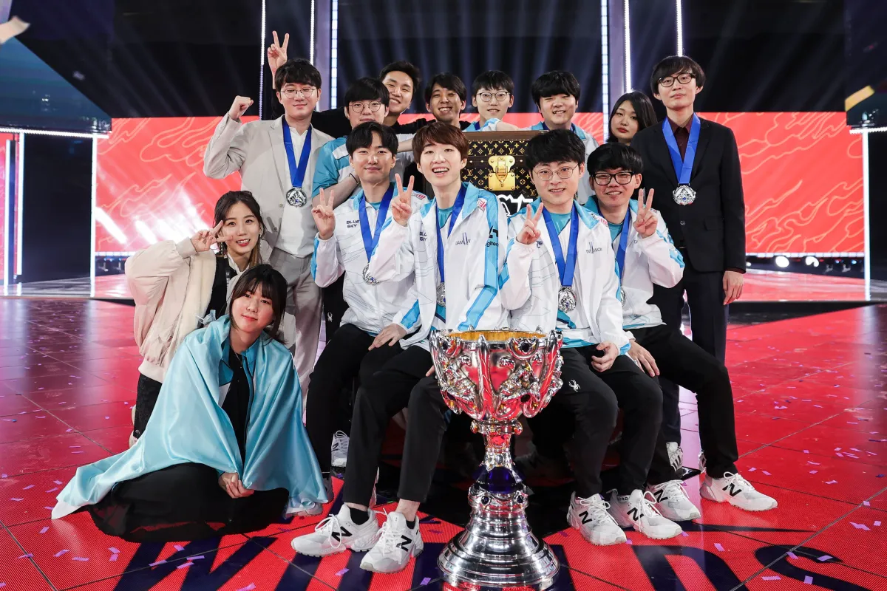

Previously On League Of Legends Worlds

DRX as 2022 Worlds Champions
Deft: “Every single night I’ve been dreaming about winning the World championship”
In the post-game interview on stage, Deft couldn’t hold back tears of joy. The 26-year-old dreamed about that moment for almost ten years, and it finally came true.
“First of all, apologies to everyone because I’m too old to cry like this, but I’m really overwhelmed right now. Ever since my debut, every single night I’ve been dreaming about winning the World championship. Going to the finals and winning the last match. It was only a dream. Now I made it, and I’m so happy right now.”
Deft spoke about his desire to be the best player in the world and his wish to say that after winning Worlds one day. Yet, when that day came, he realized the “power of friendship” is much more important:
“There was one thing that I wanted to say once I got up to the stage after winning Worlds finals, which was: I’m the best player in the world. But today, I got to realize myself being the best player doesn’t matter. It’s about our team being the best in the world, and today we were the best team. I want to say thank you to all the players, coaching staff, everyone working for DRX, and all the fans out there.”

WORLDS 2021, EDward Gaming
On November 6, Edward Gaming won their very first League of Legends Worlds 2021 championship title after dethroning former Worlds 2020 champions DAMWON KIA in the finals 3-2.
This is the esports organization’s second international title after MSI 2015. To celebrate their victory, Edward Gaming’s players will also get the chance to select which champions they want Worlds skins for, and work with Riot Games to personalize them.
The Worlds skin line has been a tradition in League of Legends for the past 11 years, where Riot honors each team’s World Championship victory, forever immortalizing them in-game.
In the post-finals press conference, Edward Gaming’s players revealed which champions they are considering for Worlds skins.

WORLDS 2020, DAMWON Gaming
Despite the COVID-19 pandemic making it difficult to hold live events, Riot managed to hold Worlds with extra precautions and players competing inside a bubble environment with no spectators except for the final. Korea’s DAMWON Gaming entered Worlds as Korea’s summer champs and went 5-1 in the groups stage. In the playoffs, DAMWON beat fellow Korean team DRX 3-0 in the quarterfinals and Europe’s G2 Esports 3-1 in the semifinals. They reached the final, where they faced Chinese team Suning. DAMWON beat Suning 3-1 to stop China’s run of consecutive world championships and put Korea back on top. It was the first world championship by a Korean org besides Samsung or SKT.